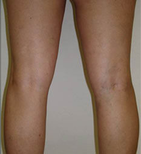

2000000 de personnes meurent chaque année suite aux
maladies causées par les varices. Ne soyez pas l'une d'elles!


LA REGENERATION DES VEINES JUSQU'A LEUR ETAT NORMAL
Son efficacité est prouvée par les phlébologues
de l'Académie de la santé de Stockholm
A la fin du traitement par Veniselle les
consommateurs remarquent
93%
Une baisse des marqueurs
inflammatoires dans le sang
89%
La diminution de la dilatation des
veines
97%
La diminution de la douleur de la
fatigue et du gonflement
VU DANS


Veniselle
L'expert du traitement de la maladie veineuse!


La santé et la beauté
des jambes c'est
La crème Veniselle est
élaborée à base des recherches effectuées par les phlébologues de l'Académie
de Santé de Stockholm Le produit a suivi toutes les étapes
nécessaires des tests, ce qui est confirmé par les brevets et les certificats
des Associations internationales de contrôle de la qualité des médicaments
En 2019 OMS s'est jointe aux études de la formule révolutionnaire de la
crème. Veniselle a été reconnu en tant que seul produit efficace à l'action locale
dans le traitement de la maladie vasculaire. L'utilisation de cette crème
regénère les veines endommagées jusqu'à leur état normal, ce qui auparavant était possible
seulement grâce a une intervention chirurgicale.


RIEN NE POURRA PRENDRE SOIN DE VOS VEINES A PART
RIEN DE SUPERFLU DANS LA CREME Veniselle
0% des composants synthétiques 0% des
antibiotiques 0% des hormones glucocorticoïdes

Troxérutine
100% des composants actifs
Produit un effet puissant résorbant et
cicatrisant
Sert comme un booster - accélère la diffusion
des composants actifs vers le point précis.
Dissout les hématomes, les bosses et les
ulcères, rends aux veines leurs aspect normal.
Marronnier d'Inde
Renforce les parois vasculaires et les valves,
réduit la viscosité du sang et le risque de formation des caillots

Extrait des fleurs de camomille
Diminue l'inflammation, les démangeaisons et le
gonflement, désodorise et adoucit la peau
Extrait de l'orties
Renforce et tonifie les parois des vaisseaux
sanguins, diminue les varices, améliore le flux sanguin et élimine la congestion
veineuse

Menthe
Rafraichie et adoucit la peau, calme la
douleur, soulage les jambes lourdes et fatiguées.

Caféine
Un tonique veineux naturel, rends la peau plus
élastique et plus lumineuse

Panthénol
Calme, adoucit et nourrit la peau, répare les
microfissures, normalise le métabolisme cellulaire, renforce les fibres de
collagène

Extrait du piment
Contribue à la meilleure absorption des
ingrédients actifs par la peau, améliore la microcirculation sanguine, augmente
le tonus veineux et diminue la perméabilité des capillaires

Extrait d'armoise
Renforce les vaisseaux sanguins, aide à la
prévention des caillots de sang et des varicosités

Mathilde Dumont Expert en phlébologie
L'insuffisance veineuse est un syndrome clinique dû
à la défaillance du flux sanguin. En cas des varices les clapets des vaisseaux ne se ferment
pas complètement. A cause de cela le sang descends dans les membres inferieurs, stagne en
suite en formant des gonflements et des douloureux ulcères. Sans traitement la situation
s'aggrave. La septicémie peut entrainer l'amputation, et un caillot peut causer le décès.
Afin d'éviter ce genre de malheur et de se protéger, je
recommande à mes patients la crème Veniselle. Cette crème agit sur tous les signes de reflux
veineux et améliore l'état des veines dès les premiers jours d'utilisation.
PRINCIPE D'ACTION Veniselle
La régénération des veines jusqu'à leur était
normal en 4 étapes
Soulage l'inflammation
Arrête la production de prostaglandines dans le corps -
des substances qui provoquent des processus inflammatoires dues a des varices
Calme la douleur
En augmentant la perméabilité des veines, la crème
soulage les symptômes accompagnant les varices - les spasmes et les crampes
Renforce
Les principes actifs de la crème renforcent les parois
vasculaires des veines. Cela augmente leur tonus général et empêche les veines
amincies de se souder à la peau, ainsi que la congestion et la thrombose
Détends
En fluidifiant la lymphe et en accélérant le flux
sanguin la crème produit un effet décongestionnant. Cette action soulage la fatigue
et le syndrome des jambes lourdes
VU DANS
LES MOYENS SONT NOMBREUX. MAIS LE SEUL EST
EFFICACE
9 sur 10 consommateurs remarquent, que Veniselle est le
meilleur remède contre les problèmes veineux qu'ils n'ont jamais testé.
Le schémas de l'action des différents types de
traitement sur les veines
âge
Echelle quotidienne
35
30
25
20
15
10
5
30
45
60
Thérapie
de compression
de compression
30
45
60
Médecine
alternative
alternative
30
45
60
Intervention
chirurgicale
chirurgicale
30
45
60
AVIS:


Avant

Après


Avant

Après


Avant

Après
2000000 de personnes meurent chaque année suite aux
maladies causées par les varices. Ne soyez pas l'une d'elles!

Crème anti-varice
pour le traitement
pour la prévention
pour la diminution de la fatigue
Commandez ce BESTSELLER des maintenant avec
50% de réduction
Complétez ce formulaire et nous vous rappellerons pour
les précisions dans quelques minutes!
* Faites attention que les TVA locaux peuvent varier, cela dépend du pays où vous commandez nos produits. Notre Service Clientèle vous en consulteront avec plaisir